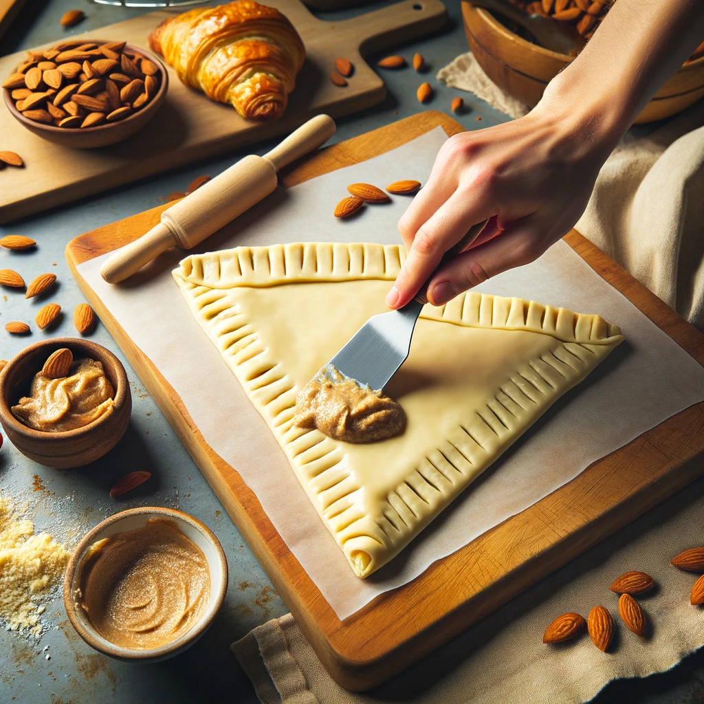
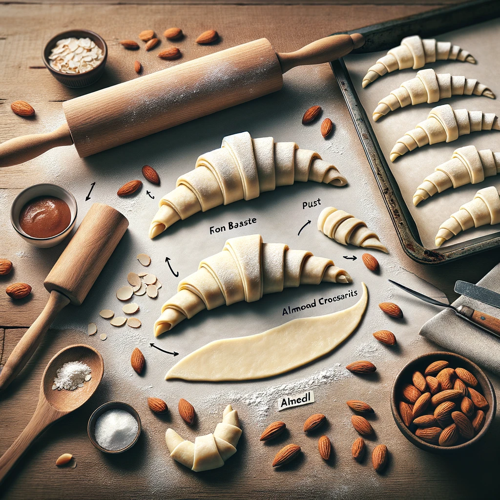
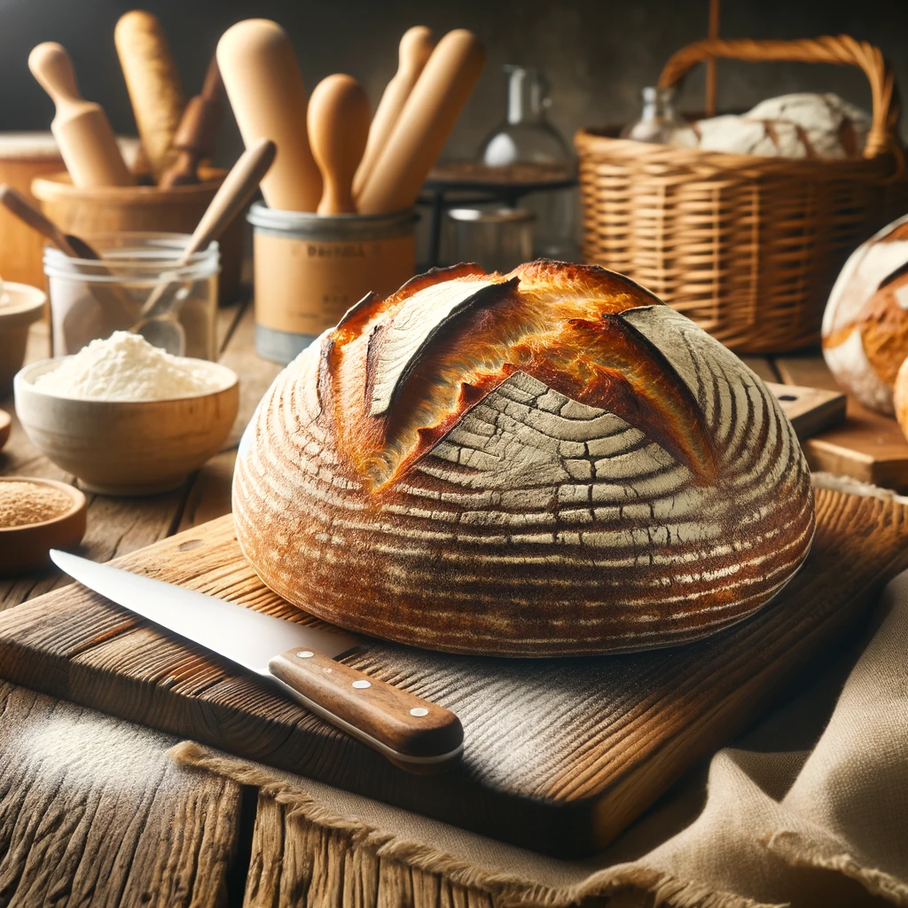
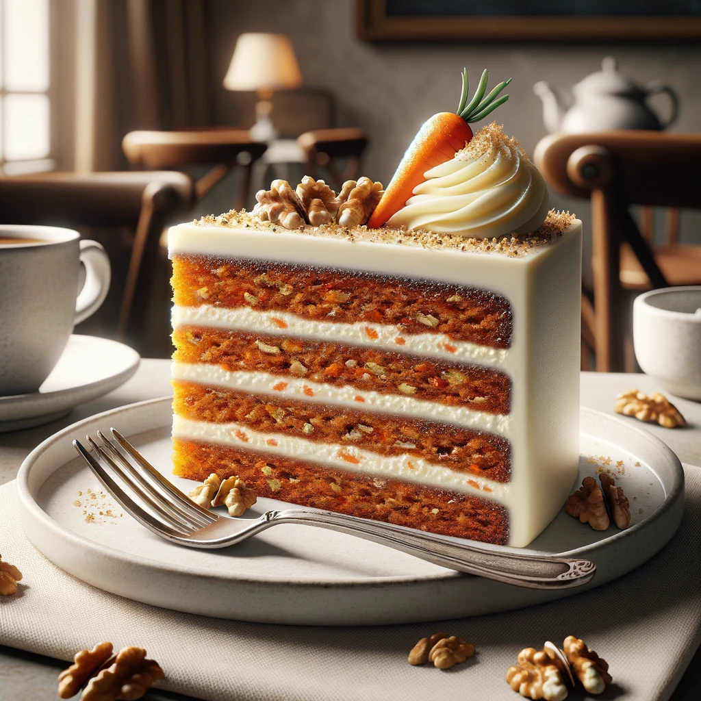
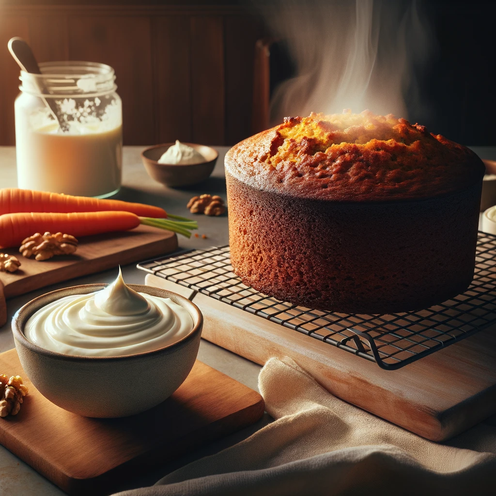

Almond Croissants:
A delicate pastry filled with the sweet nutty goodness of almond paste, dusted with powdered sugar, and baked to a golden perfection
Ingredients:
- 1 sheet of puff pastry
- 1/2 cup of almond paste
- 1/4 cup of powdered sugar
- 1 egg (for egg wash).
Instructions:
- Preheat the oven to 375°F.
- Roll out the puff pastry and cut it into triangles.
- Spread a thin layer of almond paste on each triangle. 
- Roll each triangle from the base to the tip, and curve into a crescent shape. 
- Brush with egg wash and sprinkle with powdered sugar.
- Bake for 15-20 minutes until it’s golden brown.
Sourdough Bread:
A community favorite, boasting a crusty exterior and a soft, airy interior, embodying the classic sourdough charm
Ingredients:
- 2 cups all-purpose flour
- 2 cups granulated sugar
- 1 teaspoon baking soda
- 2 teaspoons cinnamon
- 1/2 teaspoon salt
- 1 cup vegetable oil
- 4 large eggs
- 2 cups grated carrots
- 1 cup crushed pineapple
- 1/2 cup chopped walnuts
Instructions:
- Preheat the oven to 350°F
- Fix together the flour, sugar, baking soda, cinnamon, and salt in a large bowl
- Stir in the oil and eggs until smooth
- Fold in the carrots, pineapple, and walnuts
- Pour the batter into a greased baking pan and bake for 30-35 minutes
- Make sure you allow the cake to cool before frosting with cream cheese frosting.
Classic Carrot Cake:
An homage to tradition and familial bonds, enriched with the natural sweetness of carrots and a crunch of walnuts, it holds a special place in his heart as it was his late grandfather's favorite. Every year on his grandfather's birthday, Denzel bakes this cake to honor his memory and the bond they shared over the love of baking.
All images created by ChatGBT
Ingredients:
- 2 cups all-purpose flour
- 2 cups granulated sugar
- 1 teaspoon baking soda
- 2 teaspoons cinnamon
- 1/2 teaspoon salt
- 1 cup vegetable oil
- 4 large eggs
- 2 cups grated carrots
- 1 cup crushed pineapple, 1/2 cup chopped walnuts
Instructions:
- Preheat the oven to 350°F
- Mix together the flour, sugar, baking soda, cinnamon, and salt in a large bowll
- Stir in the oil and eggs until smooth
- Fold in the carrots, pineapple, and walnuts and then pour the batter into a greased baking pan and bake for 30-35 minutes
- Make sure you allow the cake to cool before frosting with cream cheese frosting. 